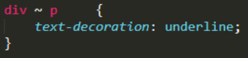

Lecture 1: Pop-ups
To add an alert when you click on particular content, you have to add the onclick attribute to the tag for the contnent and then put alert, and your mesage in quotes within parentheses. Like this.
When you click on this sentence, an alert will appear confirming it works.
Lecture 6: Different headers
When the h1 and h2 tag are siblings of the same tag, they are the same size.
h1
h2
h3
h4
h5
h6
Lecture 7: Lists
Unordered list: use the 'ul' tag.
Then each listed item is surrounded in the 'li' tag.
Ordered list: use the 'ol' tag.
Then each listed item is surrounded in the 'li' tag.
- Switch on the computer.
- Log in.
- Enter user.
- Enter password.
- Open Google Chrome.
You can remove the bullet points of numbers from lists by adding attributes to the tag itself, or to the stylesheet. I have done so in the navigation bar where there are links to areas of the page. It is actually a list, but because I have removed the bullet points, you can't tell the difference.
Lecture 8: Character entity references
Note: For some reason, I don't need to add a semi-colon for some entities to show, that why I have enclosed the words in brackets
There are 3 characters that should always be escaped. They are (<), (>) and (&).
To show these as text you must type in ,

,

respectively.
Other example of Entity References:
(©):  ("):
("):
You can also stop text wrapping when a window is made smaller by using . I've typed a long sentence so that I can show how to prevent broken words.
The set of unbroken words that I am going to use as an example is my full name. Tiffany Oluwatoyosi Taiwo Jacobs. If you use multiple no break spaces together, it will be recognised as multiple spaces.
Lecture 9: Creating links
Internal links are links to a file in the same directory as the file that is being edited.
Like this.If you want the link to be on a different line, you can surround the text in div tags.
Like this.
External links are links to a file that is not in the same directory. Like this.
Same page links are links to an area in the same page. Examples of this are shown with the links at the top of the page to each lecture. Also it should be noted that if you want a link to open in a new page or tab, you must _blank in a target attribute.

Lecture 10: Displaying images
To display an image you use the 'img' tag.
It's an inline tag so as shown above, if you want the image on it's own line you need to contain the image in a blockline tag. I have used 'div' tags as my blockline tags. Below you will see that the text 'Here's a picture of a puppy.' are right next to the image on the same line, and this is proof of the 'img' tag being an inline one.

Here's a picture of a puppy.
Lectures 13 & 14: Element, class and ID selectors
You can style an element by simply writing the name of the element and then write the styles you want in a pair of braces.
You can style a class by writing a fullstop, the name of the class with no spaces and then write the styles you want in a pair of braces.
You can style an ID by writing a pound sign, the name of the ID with no spaces and then write the styles you want in a pair of braces.
I have shown the use of using selectors to style my webpage in the stylesheet. For example I gave made all the text on this page Trebuchet MS.

You can style several selectors in the same way by separating them with commas.

Selectors can also be combined, they don't have to be used individually. There are 5 different ways to combine selectors that I currently know of.
Element with a class selector
To do this, you simply type in the name of the element followed by a fullstop and then name of the class without spaces in between.
An example is shown below:
This means that every 'span' element that is classed as examples will have a 40px left margin.
Direct child selector
The direct child inside the parent will be affected. Not all descendants, just the ones that are directly inside the parent.
An example is shown below:

This means that every 'p' element that is a direct child of an article will be blue. A 'p' tag within a 'div' tag that is within an 'article' tag, will not be affected.
Descendant selector
Is the exact same as the direct child selector, except for the fact that it also includes any of the tags that are also not direct child.
An example is shown below:
This means that any 'p' elements that are within the 'article' element will have the font size of 24px.
Adjacent sibling selector
This is used to affect selectors that are next to each other. You use the '+' to connect selectors.
An example is shown below:

This means that any 'p' tag that directly follows a 'p' tag will have a yellow backfground. The first p itself is not affected.
General sibling selector
To do this, you use the '~' to connect selectors. This means that all the siblings within the same parent will have certain attributes.
An example is shown below:

This means that any 'p' elements with the same parent 'div' element will be underlined.
All of this can be applied to different selectors and can be mixed. It doesn't have to be with element to element only.
I have actually combined selectors myself by using in my stylesheet.
This helps me style every lecture title the way I want to because it is alwys the 1st div in every section that I have created.
Lecture 15: Pseudo-class selectors
There are also pseudo-class selectors which work based on the way the user interacts with the webpage. The pseudo-class refers to the current state of particlar content. To use one, you add a semi-colon after the selector and then the pseudo-class. Here are examples of a few:
The ':link' one is a link in its natural state before it has been clicked on. ':visited' is a link that has been clicked on before. ':hover' is a link that is being hovered on. ':active' is a link that is being clicked on. ':nth - child(1~/odd/even)' is a particular child within the selector chosen. You can have any number child, or you coud put every even or odd child.
Lectures 16 & 18: Style placement & styling text
You can style text directly inside the necessary html, but it is more common practice to use a css stylesheet and then provide a link to it in the html. Putting styling in the head tag of the actual html being edited will override the stylesheet, but it is not good practice.
Remember that styling attributes work in a chronological order. So the lower it is in the html, the higher precedent it takes. (This obviously disregarding the rule of specificity.) This is why you place the link to the stylesheet inside the head area, as this means you have virtually added all your styles there.
There are many ways to style text. Here are few examples:
font-family: [font]
color: [colour]
font-style: [normal, italic, oblique, initial, inherit]
font-weight: [100~900, initial, inherit]
font-size: [*px, *%, 0.*1~em]
text-transform: [captials, lowercase, all capitals]
text-align: [center, left, right]
'font-family' - You simply put in a few font's that you would like the browser to display. You can type multiple, just incase the browser that is being used doesn't support a particular one.
'color' - You put the color that you want. You can type the name of the color, but it is best to you the hex code.
'font-style' - Type the style. 'initial' means that it will retain the default style. 'inherit' means that it will take the style of the parent tag.
'font-weight' - 400 is the same as bold, any numbers entered that are lower or higher will be thinner and thicker respectively. You can also use 'initial' and 'inherit' here.
'font-size' - You can use pixels, percentage or em. 'em' is the scaled number to the default font size. If you put 0.5em and the default font size is 12px, it will then become 6px.
'text-transform' - Pretty self-explanatory.
'text-align' - Again self-explanatory.
Lecture 17: Conflict resolution
When two or more styles have been given to a particular element, class or ID, there needs to be a way to tell which style will take precedence. There are several ways to do this. The three ways that I know about are 'Origin precedence', 'Inheritance' and 'Specificity'.
The 'Origin Precedence' is that the last declaration wins in a conflict. If there is no conflict they merge. This means that something that is placed lower will have take precedence. There is also the fact that if two styles target the same area, one is in the stylesheet and the other is in the html, the html styling will prevail.
'Inheritance' rule is that every child of a tag that has certain properties will also have that property.
For example in the following html below, if the div tag was styled, the span tags would have the same style because they are children of the div tag:
The 'Specificity' rule is that the most specific selector combination will win. To work out the specificity score you used the model below.
If a style="..." is used, you place a '1' in the thousands box. If you do this any style placed directly in an element tag will win a conflict.
For every ID used, you must add '1' to the hundreds box.
For every class, pseudo-class or attribute used you add '1' to the tens box.
For every element used, you add a '1' in the ones box.
Note: The highest specificity score is 1000.
To override everything you can use !important but it is ill-advised.
-->
Lecture 19: The box model
Content: The actual thing that is within the tags. Can be text, a link or an image.
Padding: You can add padding to the top, right, bottom and left of the content. It is between the content and the border.
Border: Between the padding and the margin.
Margin: Automatically set by the browser if there is no style added. When margins are side-by-side, they are cumulative. However, when they are top-to-bottom the margins collapse and the largest one wins.
Height and Width: pretty self-explanatory except for the fact that when the box-sizing is set to border box, it accounts for the whole box of the element and not the height and width of the content which is the default setting.
To change the box-sizing to border box you do this:
box-sizing: border-box;
Overflow: when the box-sizing is set to border-box, a width and a height has also been set, and your content is spilling out of its box, you can use the different styling options to alter its appearance.
To change the overflow you type this html.
overflow: [visible, hidding, auto, scroll]
Note: 'auto' creates a scroll bar when necessary and is usually used for Terms of Service.
scroll; always shows a scroll bar.
Lecture 20: The background property
You can use a background image by using:
background-image: url('image.jpg')
To edit whether or how it repeats you use:
background-repeat: [inherit, no-repeat, repeat;, repeat-x, repeat-y, space, round]
Note: 'repeat-x' repeats horizontally and 'repeat-y' repeats vertically.
'space' repeats evenly spaced out and 'round' repeats evenly with no space.
You can also choose the position of said imagine by using:
background-position: [top, right, bottom, left]
All these background properties can be specified under just background: [...], but doing so will make the priority work in a consequential fashion. This means that if you have an image and a color, the later mentioned on will override all previous properties unless it's respecified in background: [...].
Below are examples of each background property style that you can have. They are in the following order 'no-repeat', 'repeat, 'repeat-x', 'repeat-y', 'space' and 'round'.
Lecture 21: Floating
You can creat multi-column designs using floating. When you float an element, it means that you are taking it out of the regular flow.
- It should be noted that margins typically collapse when they are top-to-bottom, but when elements have been floated, their margins do not collapse.
- To stop an item floating on top of other elements you use clear: [left, right, both].
- To make columns, you must set the width for each section as a percentage. When doing this you must remember to set the box-sizing to border box, if not, your content will spill out of it's box.
An example of me floating is shown under 'Lecture 6' where I have floated the different headers to the left.
Here is another example:
Lecture 22: Relative and absolute positioning
Firstly you must know about static positioning. This is the default positioning for all elements except html. It's basically the regular flow of a document.
Relative positioning
Relative positioning is when an element is positioned relative to its position in the the regular document flow. The positioning properties are top, bottom, left and right.
It should be noted that when an element is relatively positioned, it is not taken out of the regular document flow. This means that its original position in the document is preserved. As far as other elements are concerned, the element is still in its original position.
Look at the effect of the following html:
 Absolute positioning
Offsets are relative to the position of its nearest ancestor that does not have static positioning.
As mentioned earlier, by default 'html' is the only element that has relative positioning. In absolute positioning, the element is both taken out of the visual and actual document flow. This means that unlike with relative positioning, other elements know that the element is no longer in it's original position.
Absolute positioning
Offsets are relative to the position of its nearest ancestor that does not have static positioning.
As mentioned earlier, by default 'html' is the only element that has relative positioning. In absolute positioning, the element is both taken out of the visual and actual document flow. This means that unlike with relative positioning, other elements know that the element is no longer in it's original position.
Lecture 23: Media queries
Adjusting the way things appear on the screen depending on the size of the device.
@media (mediafeature) {
@media (mediafeature) logical operator (mediafeature) {
The 'mediafeature' can be: [min/max]-[width/height]: *px; and the 'logicaloperator' can be and or [,].
Note: 'and' is more commonly used.
I have actually used media queries on this html page for several sections. You can take a look at the 'Lecture 16 & 18' are to see it in effect. When the device has a large screen, the section is 2 columns, on anything smaller, it is 1 column. Below is a picture of the html I have used:
It is important to make sure that you do not overlap breakpoints. By providing bare styling and then dealing with media queries, you can avoid this.
Lecture 24: Responsive design
A responsive site is a site that's designed to change its layout by using fluid proportion-based grids, flexible images and CSS3 media queries. This basically means tht it adapts to the size of the displaying device. The visual delivery itself may even change.
The alternative to responsive design are servers that detect whether a mobile or laptop/PC is being used. The issue with this is that you end up sacrificing user experience because you are trying to find one mobile version that fits all, when mobile devices have many variations.
The most common layout for responsive designs is a 12-column grid. This is because it has many factors.
Note: The spaces between each box is the padding.
You can add styling that makes everything appear in one column when viewing on smaller screens. However, phones are set by default to zoom out on the browser, so instead of seeing only one column, you may still see more as if you were viewing on a larger screen. To prevent this, you should put name="viewport" content="width=device-width, initial-scale=1" in the meta tag.
If you do this the browser will consider the 'device width' as tge width of the viewport. The initial scale factor will be '1" meaning it won't scale anything down.
Lectures 25 & 26: Twitter Bootstrap
Twitter Bootstrap is the most popular HTML, CSS and Javascript for developing responsive mobile first projects on the web.
Mobile first has two meanings:
1) You code for mobile first.
2) You code with desktop version, but plan for mobile version.
Bootstrap class names are typically written in the col-[size]-[span] fashion. The 'size' can be 'lg', 'md', 'sm' and 'xs'. Columns will collapse unless they are specified.
The 'span' is the number of columns wide that the section is. This will be a number from 1~12.
If you would like a layout to always stay the same, its best to use col-xs-[span].
The structure for a grid-based layout must be the following:
Back to top